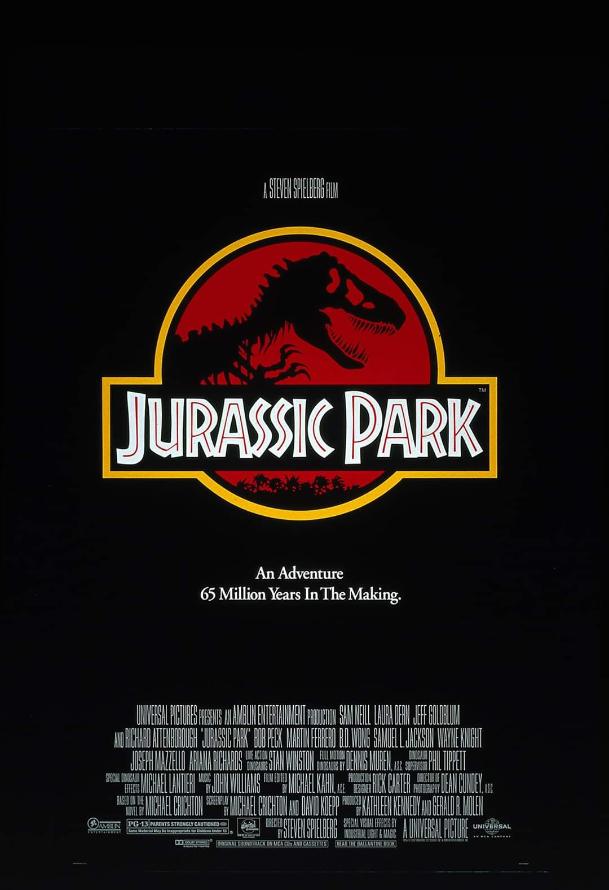
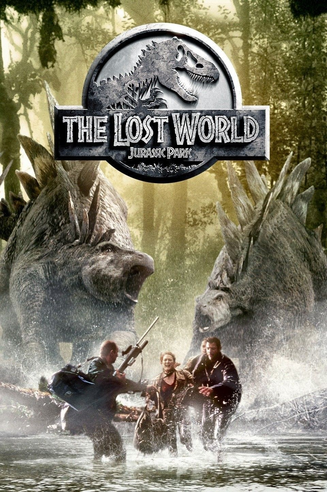
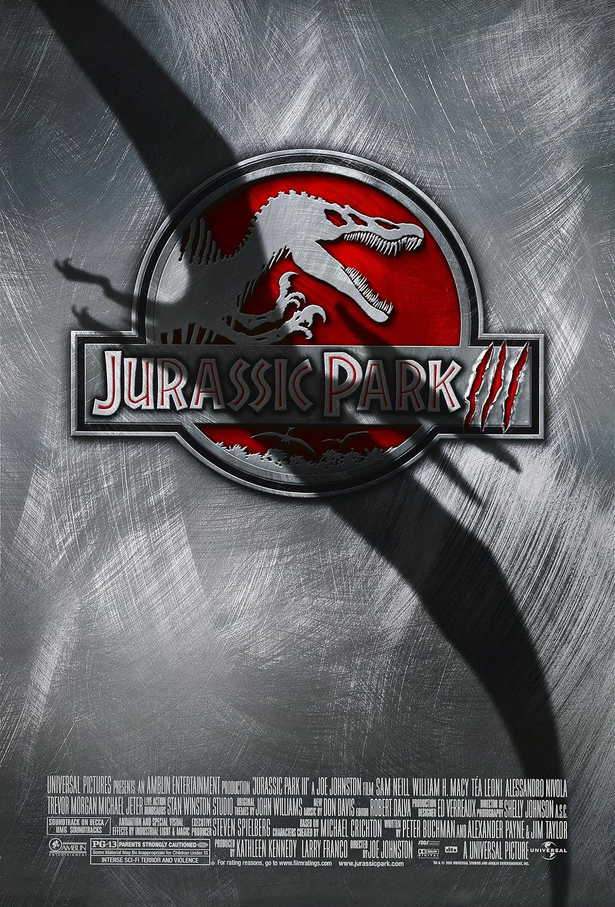
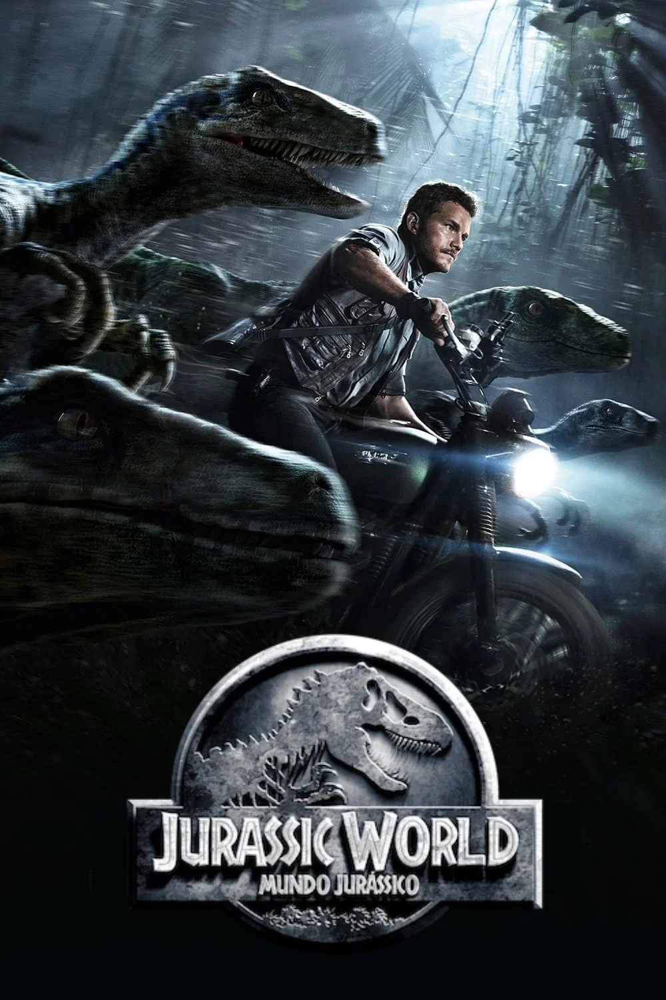
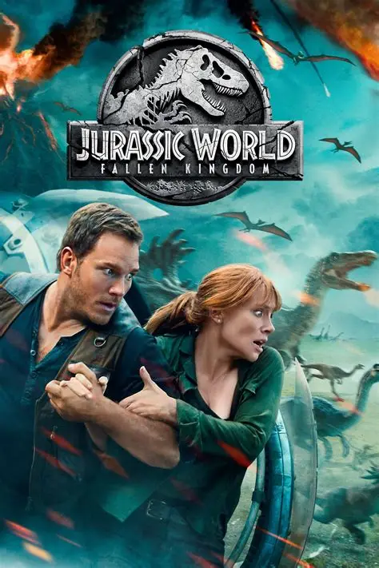
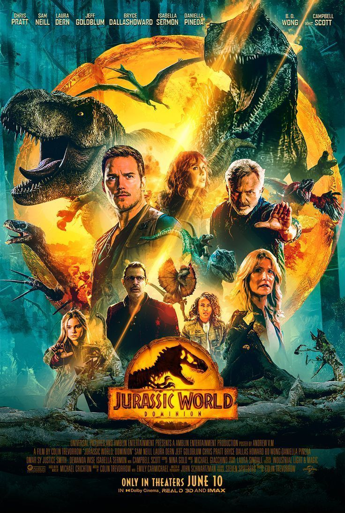
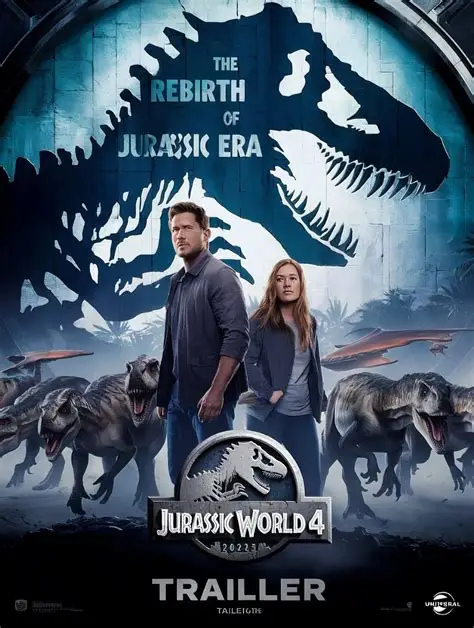
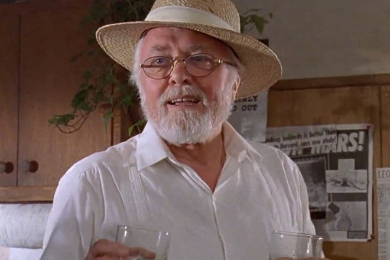

Jurassic Park
Sinopse Geral
A franquia Jurassic Park apresenta um mundo em que a humanidade consegue trazer de volta à vida dinossauros extintos há milhões de anos por meio da engenharia genética. O que começa como uma grande conquista científica se transforma em um projeto comercial, com a criação de parques temáticos onde as pessoas poderiam conhecer essas criaturas de perto. Entretanto, falhas de segurança, ambição e erros humanos fazem com que os dinossauros escapem do controle, provocando acidentes e colocando inúmeras vidas em perigo. Mesmo após diversas tragédias, a humanidade continua tentando explorar e dominar essas criaturas. Novos parques são construídos, espécies geneticamente modificadas são criadas e empresas passam a utilizar os dinossauros para interesses científicos e comerciais. Com o passar dos anos, essas criaturas deixam de estar restritas às ilhas e passam a ocupar diferentes regiões do planeta, tornando inevitável a convivência entre humanos e animais pré-históricos. Nesse cenário, pesquisadores, aventureiros e famílias precisam enfrentar novos perigos enquanto tentam proteger suas vidas e impedir que a ganância humana provoque consequências ainda maiores. Ao longo de sua história, Jurassic Park mostra como uma descoberta extraordinária pode se transformar em uma ameaça quando utilizada sem responsabilidade. Mais do que uma aventura envolvendo dinossauros, a franquia aborda os limites da ciência, os perigos da manipulação genética, a exploração da natureza e a ambição humana. Sua principal mensagem é que, por mais avançada que seja a tecnologia, a humanidade nunca terá controle absoluto sobre a natureza e as consequências de suas próprias criações.
Filmes
Jurassic Park



Jurassic Word




Elenco Principal
Jurassic Park
Sam Neill
Dr. Alan Grant
Laura Dern
Dra. Ellie Sattler
Jeff Goldblum
Dr. Ian Malcolm

Richard Attenborough
John Hammond
Joseph Mazzello
Tim Murphy
Jurassic World
Chris Pratt
Owen Grady
Bryce Dallas Howard
Claire Dearing
BD Wong
Dr. Henry Wu
Isabella Sermon
Maisie Lockwood
Justice Smith
Franklin Webb
Daniella Pineda
Dra. Zia Rodriguez